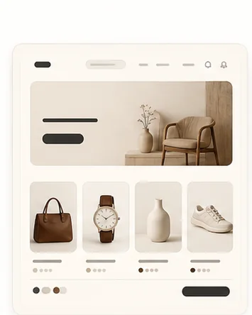
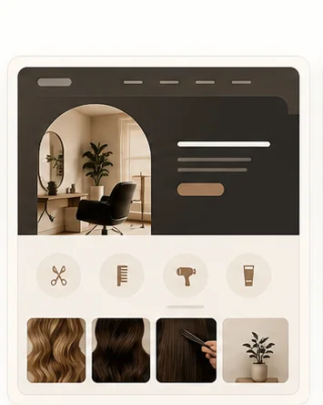
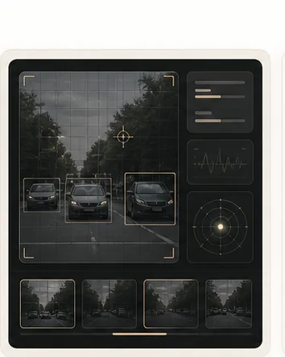
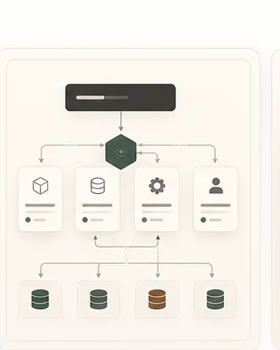
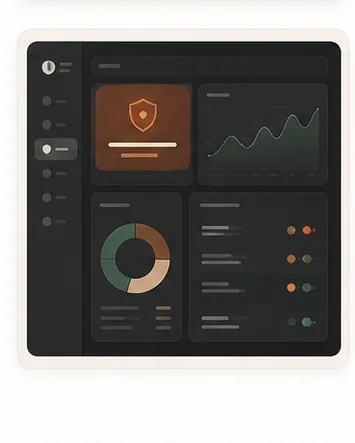
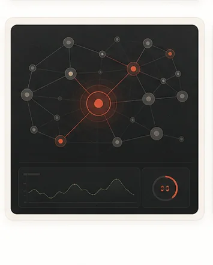
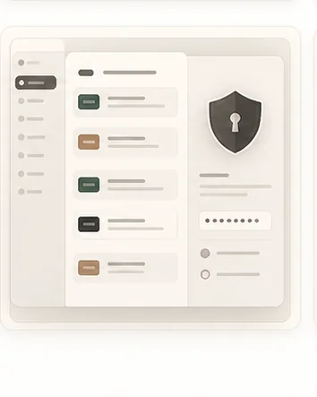
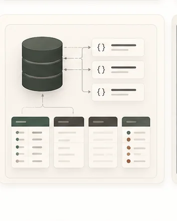
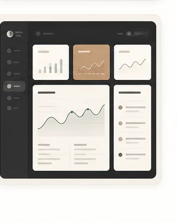

E-commerce
Production
senghorserge.me
Plateforme orientée gestion produits, présentation commerciale et expérience utilisateur responsive.
Dakar, Sénégal · Disponible
Software Engineer Full Stack, Mobile & IA Junior
Je conçois des applications web et mobiles propres, rapides et maintenables, avec une attention forte aux APIs, à l’expérience produit et aux usages IA.
Projets sélectionnés

Plateforme orientée gestion produits, présentation commerciale et expérience utilisateur responsive.

Site vitrine pour salon de coiffure avec identité visuelle, services, contact client et parcours simple.

Application de computer vision déployée pour tester des scénarios de détection d’objets et d’expérimentation IA.

Architecture microservices avec Kafka, PostgreSQL, Docker, Gateway, JWT et documentation Swagger.
Application de génération dynamique de CV professionnels avec templates modernes et parcours guidé.

Dashboard IA/sécurité pour visualiser des anomalies et explorer des signaux opérationnels.

Système IDS basé machine learning pour analyser des données réseau et détecter des comportements suspects.

Service REST avec JWT, gestion des droits, documentation Swagger et structure backend claire.

API avec authentification JWT, CRUD, architecture MVC et middlewares personnalisés.

Application web moderne avec interface réactive et structure fullstack propre.
Compétences
React, Next.js, React Native, TypeScript, JavaScript, HTML5, CSS3, WordPress, responsive design, intégration Figma.
Java 17/21, Spring Boot, Node.js, Express, C#, .NET, REST, GraphQL, gRPC, OpenAPI, microservices, SOLID.
Python, Streamlit, FastAPI, PyTorch, LLM, NLP, deep learning, computer vision, data engineering, PGVector.
Docker, Docker Compose, Git, GitHub, GitLab CI/CD, PostgreSQL, MongoDB, Hibernate/JPA, Maven, Postman, tests.
Expériences
Développement d’applications web et mobiles en startup tech, collaboration remote et itérations produit.
Applications web et mobile avec React, React Native et TypeScript, intégration Figma, APIs REST et méthode Agile.
Application C# Windows Forms/.NET, modélisation de données, tests unitaires et documentation.
Étude comparative de LLMs, pipelines Python, nettoyage de données et veille deep learning.
Contribution à des projets logiciels réels, collaboration en équipe et bonnes pratiques de développement.
Formation
Diplôme d’Ingénierie Technologue en Informatique
Diplôme de Technicien Supérieur en Informatique
Formation Développement Web & Mobile
Certifications
Contact